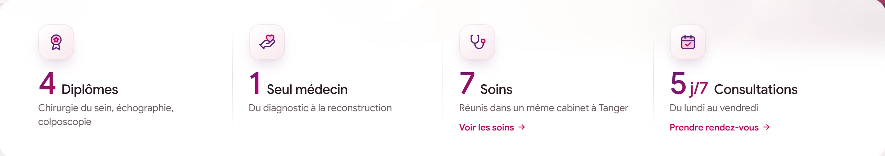

institutduseintanger.ma

01
Trust at first glance
Right under the hero, a key-figures bar sums up the practice in four facts, each with a link to go further.
- 4 diplomas, 1 single doctor, 7 treatments, 5 days a week
- “See the treatments” and “Book an appointment” shortcuts
- Overlaps the hero for a soft, premium look